Hydraulic Analysis Tool -- Interactive Driver Report
Generated: 2026-04-05 15:26:30
Total: 48 steps | PASS: 46 | FAIL: 2 |
CRITICAL: 0
S01: App launches, default state
Check: Window title contains version; 7 menus present
PASS: title='Hydraulic Analysis Tool — v2.9.0', menus=7
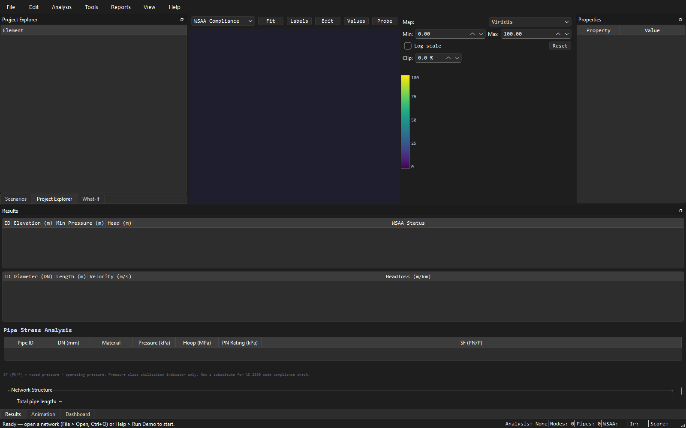
S02: File > Open demo_network/network.inp
Check: 10 junctions, 11 pipes loaded
PASS: Loaded 10 junctions, 11 pipes
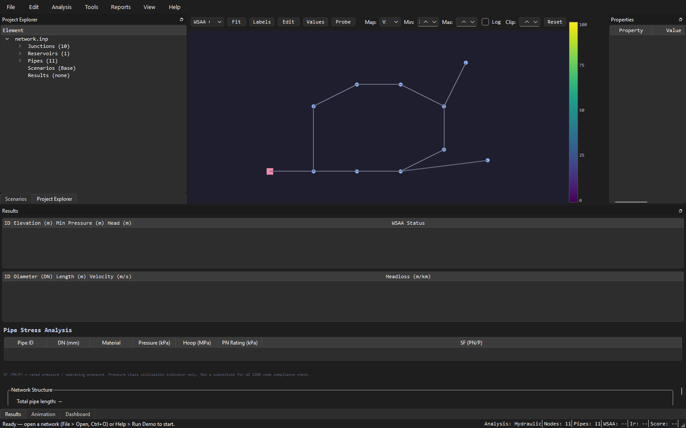
S03: Click Fit button
Check: Canvas autoRange applied
PASS: viewRange: [[-286.80326530612246, 1286.8032653061225], [-403.52842648896296, 903.528426488963]]
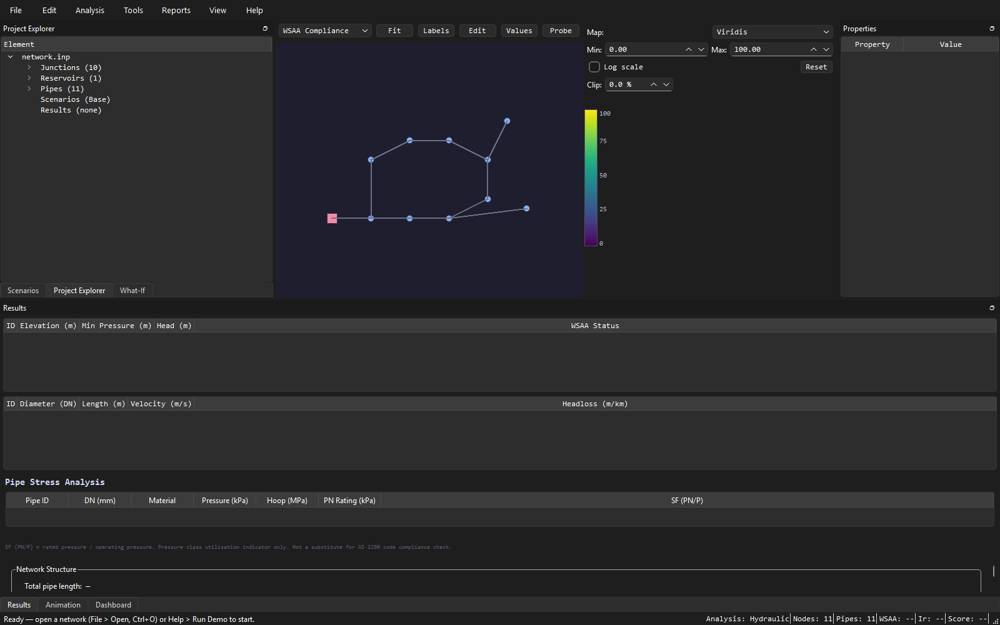
S04: Click Labels button
Check: Labels toggled on
PASS: labels_btn=True, _show_labels=True
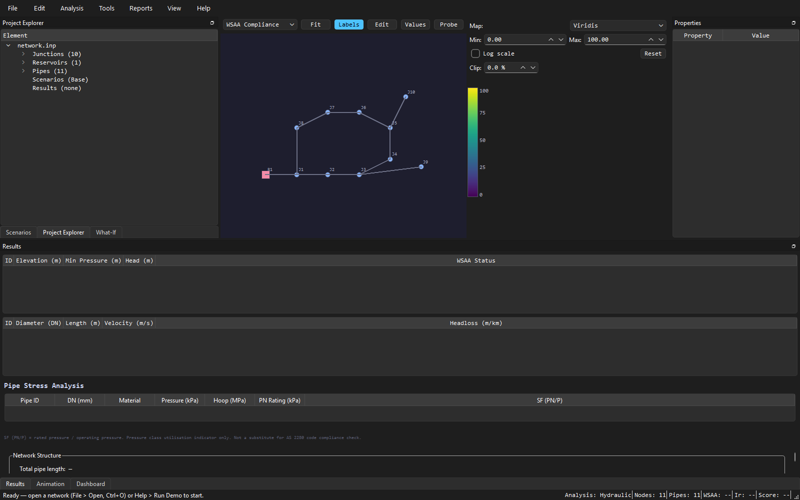
S05: Select pipe P1
Check: Properties panel has >0 rows
FAIL: properties rows: 0

S06: Select junction J1
Check: Properties panel shows J1 data
FAIL: properties rows: 0
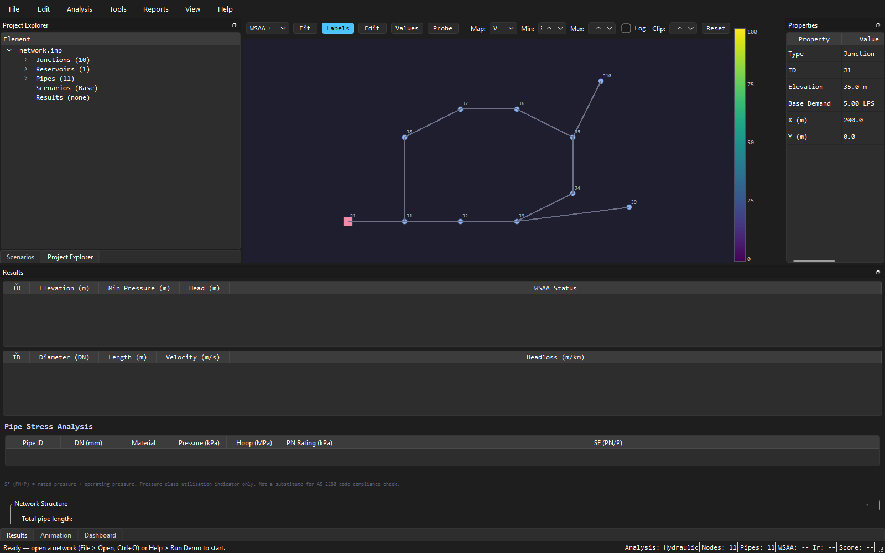
S07: Click Values button
Check: Numeric overlay enabled
PASS: values_btn=True, _show_values=True
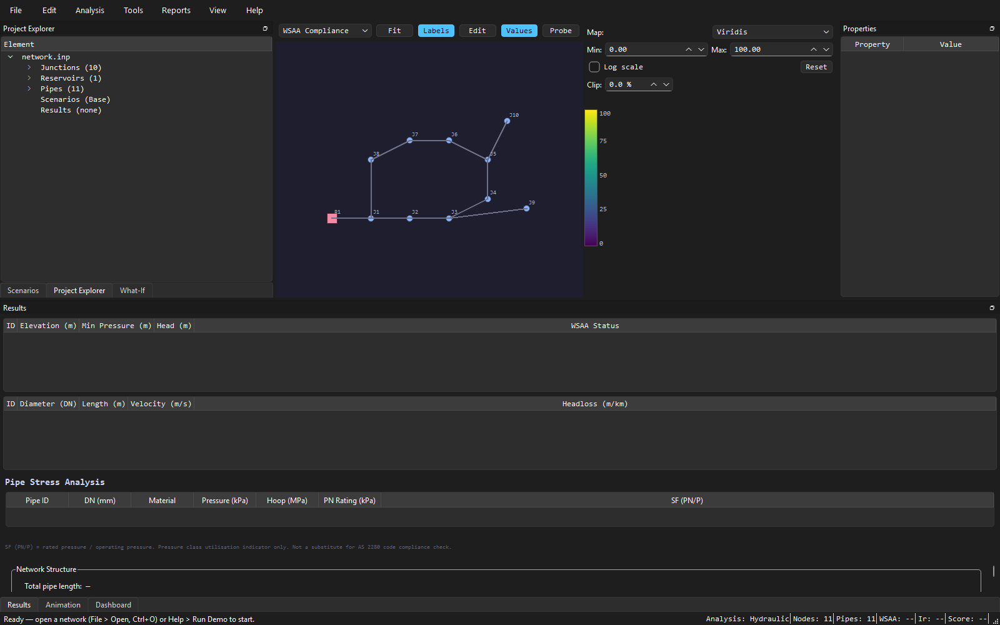
S08: Click Values button again
Check: Overlay disabled
PASS: values_btn=False

S09: Press F5 (steady state)
Check: Analysis completes, results dict populated
PASS: results_keys=['pressures', 'flows', 'compliance']

S10: Check Results tab after analysis
Check: Results dock is visible tab
PASS: results_dock visible=True, animation=True, dashboard=True
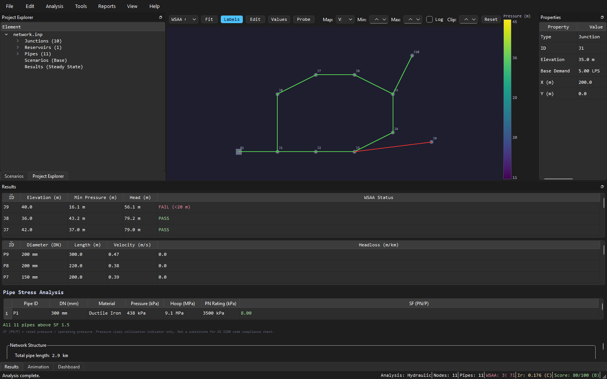
S11: Verify Results table populated
Check: node_results_table.rowCount() > 0
PASS: node_results rows=10
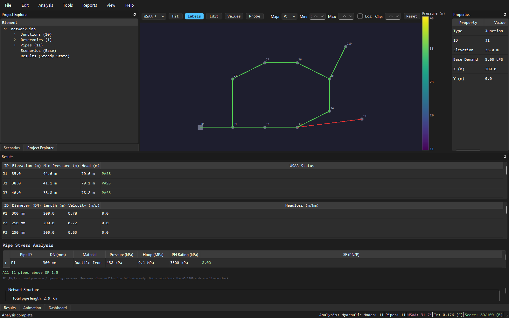
S12: Set colour mode to 'Pressure'
Check: combo.currentText() == 'Pressure'
PASS: mode set to 'Pressure', got 'Pressure'
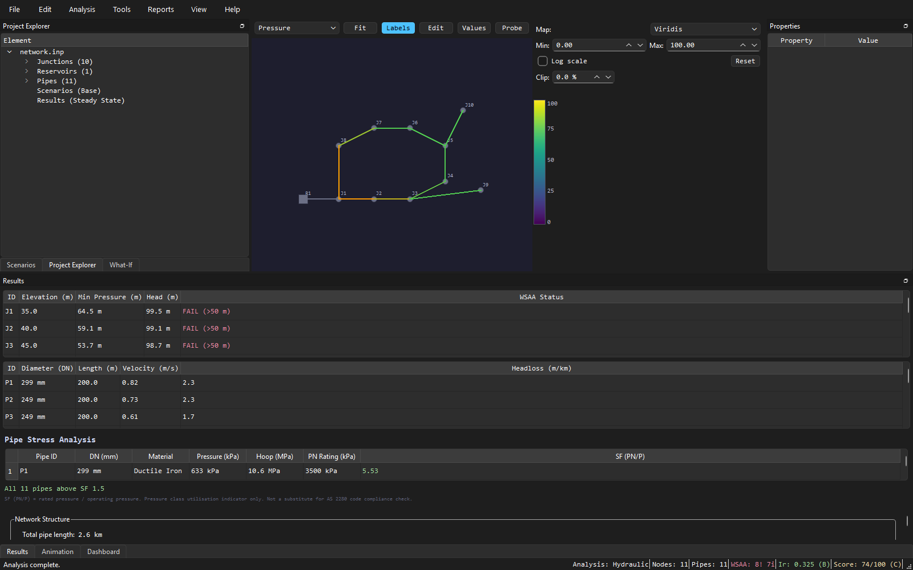
S13: Set colour mode to 'Velocity'
Check: combo.currentText() == 'Velocity'
PASS: mode set to 'Velocity', got 'Velocity'
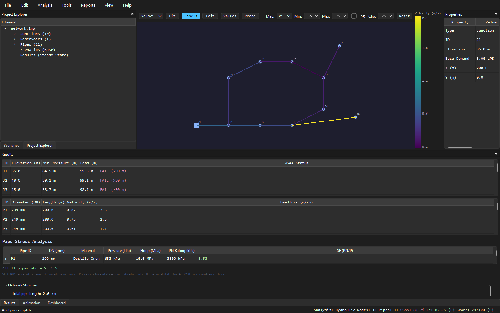
S14: Set colour mode to 'WSAA Compliance'
Check: combo.currentText() == 'WSAA Compliance'
PASS: mode set to 'WSAA Compliance', got 'WSAA Compliance'

S15: Enable Probe mode
Check: Probe mode flag set
PASS: probe_btn=True, _probe_mode=True
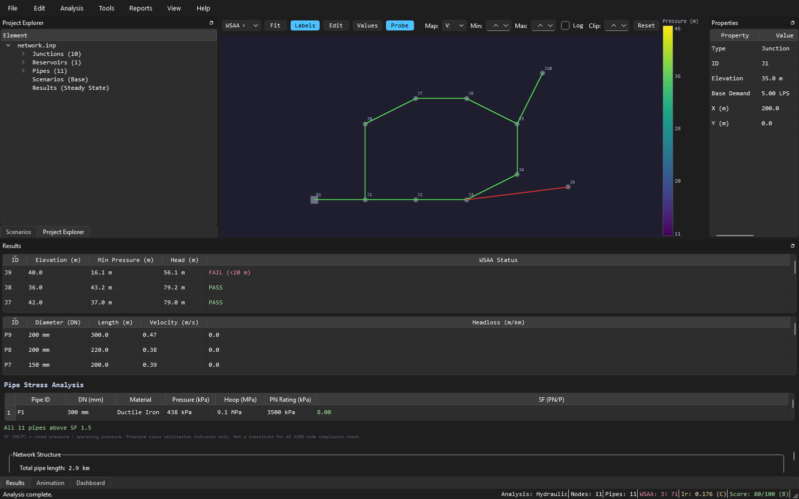
S16: Raise Dashboard tab
Check: Dashboard widget alive
PASS: dashboard widget present=True
S17: Raise What-If tab
Check: What-If dock active and tabified
PASS: what_if visible=True, tabified with=['scenario_dock']
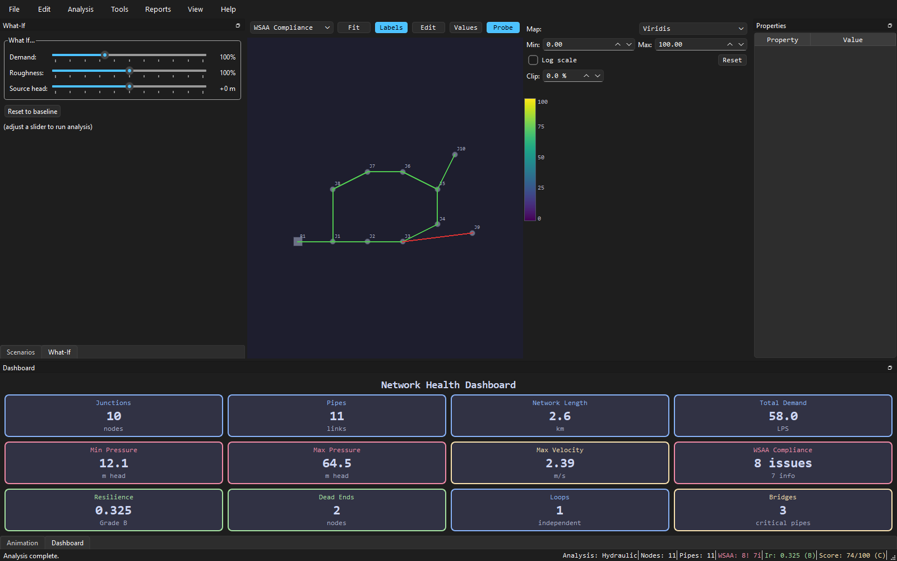
S18: Set demand slider to 150%
Check: Status label mentions 150%
PASS: status: Updated: min pressure -24.8 m, max velocity 3.58 m/s (150% demand, 100% C, +0 m source)
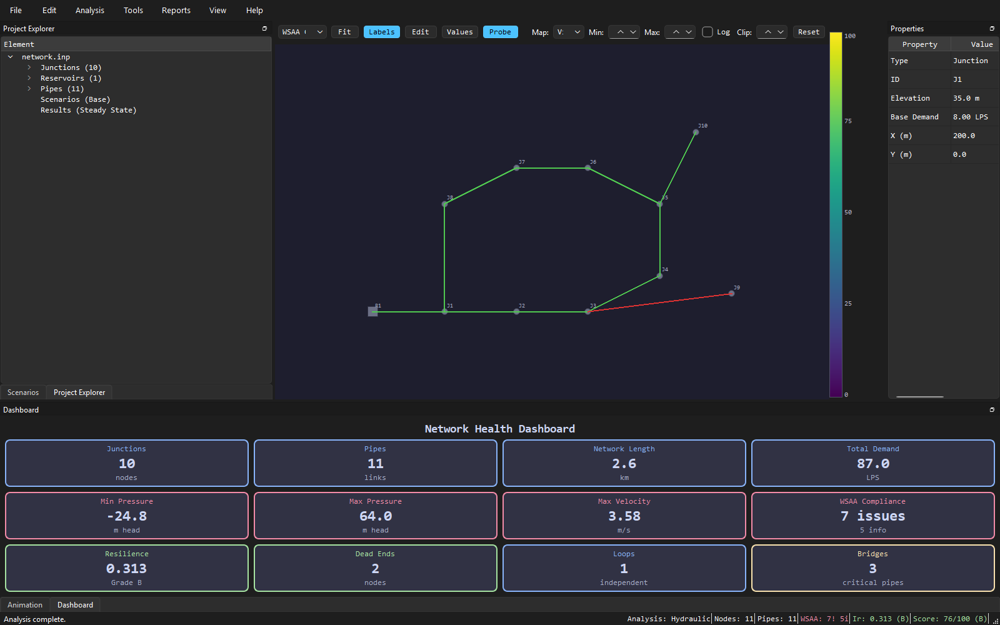
S19: Check canvas refreshed after What-If
Check: _last_results populated
PASS: min pressure at 150%: -24.8
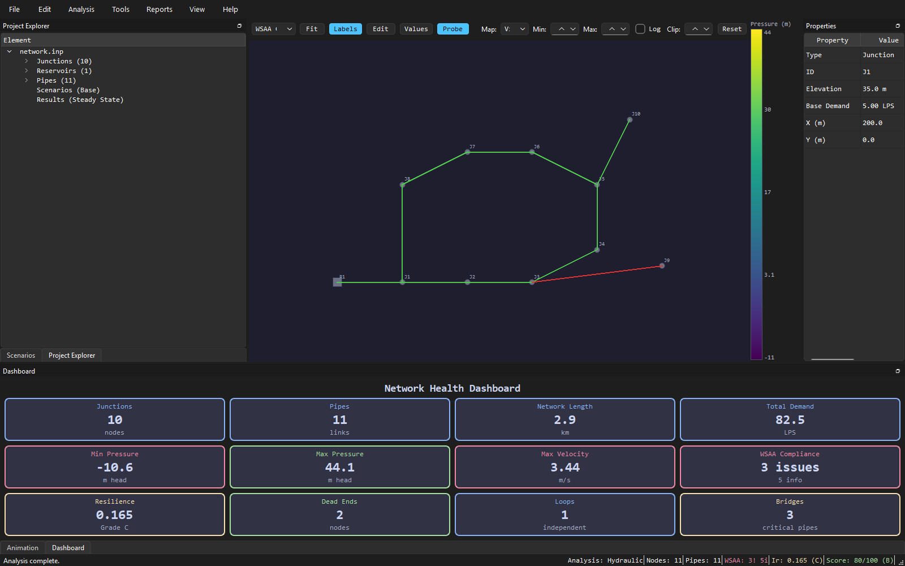
S20: Verify What-If status label
Check: Status shows min pressure + max velocity
PASS: status text: Updated: min pressure -24.8 m, max velocity 3.58 m/s (150% demand, 100% C, +0 m source)

S21: Reset demand to 100%
Check: Status mentions 100%
PASS: status: Updated: min pressure 12.1 m, max velocity 2.39 m/s (100% demand, 100% C, +0 m source)
S22: Verify pressures at 100%
Check: Min pressure in normal range 10-20 m
PASS: min pressure at 100%: 12.1 (expected 10-20 m)
S23: File > Open mining_slurry_line/network.inp
Check: Mining network loaded
PASS: mining network: 4 pipes

S24: Open Analysis > Slurry Parameters
Check: Dialog becomes visible
PASS: dialog visible=True, title='Slurry Parameters (Bingham Plastic)'

S25: Verify slurry dialog default params
Check: tau_y=15, mu_p=0.05, rho=1800
PASS: params={'yield_stress': 15.0, 'plastic_viscosity': 0.05, 'density': 1800.0} (expected tau_y=15, mu_p=0.05, rho=1800)

S26: Accept slurry parameters
Check: Window._slurry_params persisted
PASS: window params={'yield_stress': 15.0, 'plastic_viscosity': 0.05, 'density': 1800.0}
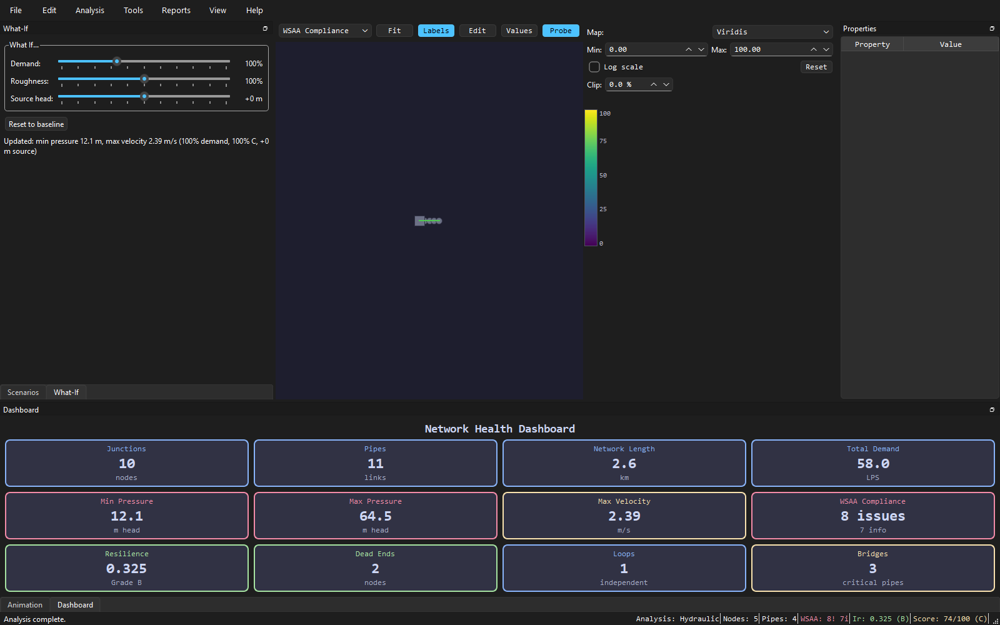
S27: Enable Analysis > Slurry Mode
Check: slurry_act is checked
PASS: slurry_act=True
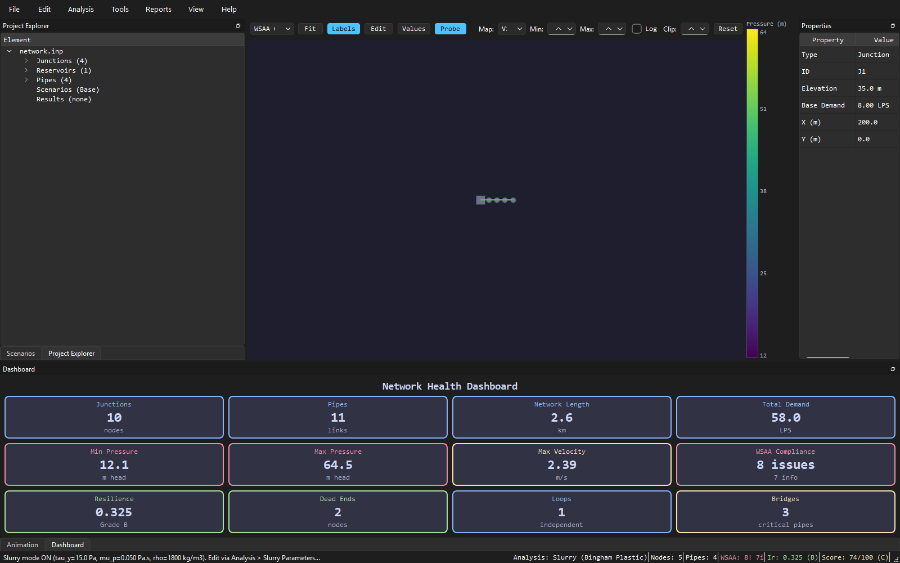
S28: Run F5 in slurry mode
Check: results['slurry'] populated
PASS: slurry keys in results: True, n_pipes=4

S29: Check column header for slurry mode
Check: 'Headloss Slurry (m/km)' in headers
PASS: headers=['ID', 'Diameter (DN)', 'Length (m)', 'Velocity (m/s)', 'Headloss Slurry (m/km)', 'Regime', 'Re_B']
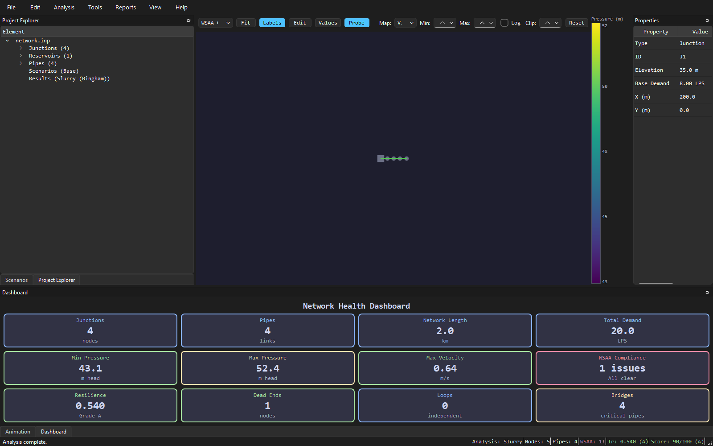
S30: CRITICAL: verify slurry headloss magnitude
Check: At least one pipe > 5 m/km slurry headloss
PASS: max slurry headloss=24.1 m/km (pipe P1)

S31: File > Open demo_network (back from mining)
Check: Demo network reloaded
PASS: demo loaded, junctions=10
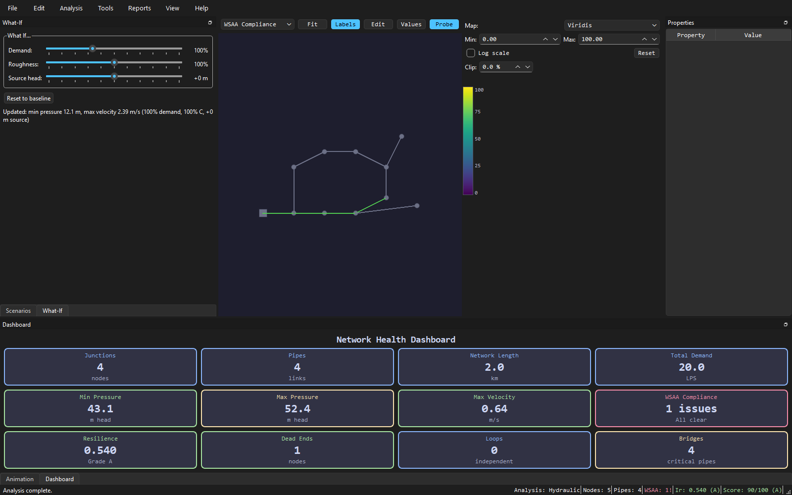
S32: Press F5 for baseline
Check: Analysis finished
PASS: results: True

S33: Generate DOCX report (via API)
Check: DOCX file created in output/
PASS: file exists: True

S34: Verify DOCX file size > 10KB
Check: output/*.docx exists and >10KB
PASS: driver_test.docx: 38147 bytes (threshold 10KB)
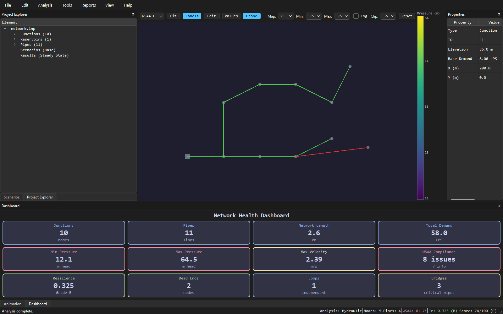
S35: Analysis > Design Compliance Check
Check: Method runs without exception
PASS: design_compliance_check returned without raising
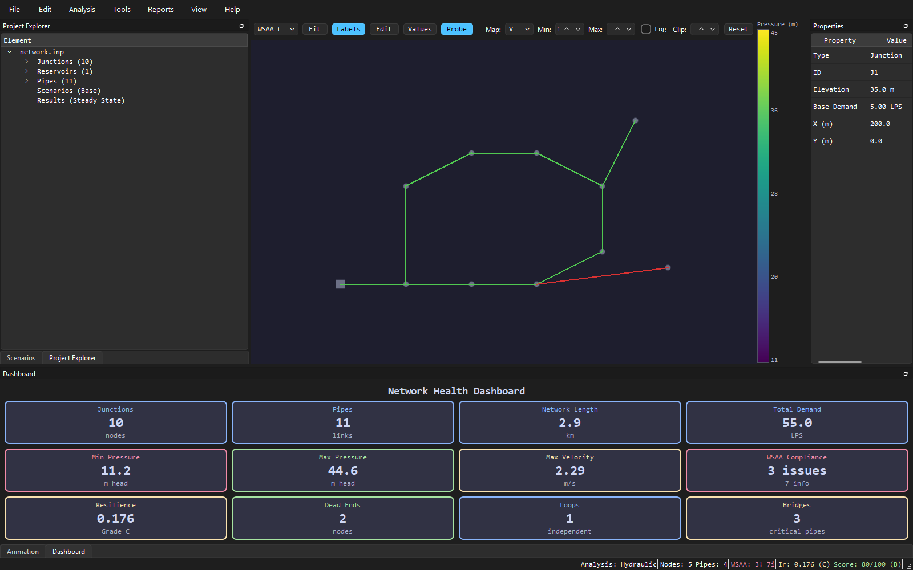
S36: Close compliance dialog
Check: Dialogs close cleanly
PASS: found 0 dialogs, closed
S37: File > New (clear network)
Check: wn set to None
PASS: wn after new: None
S38: Press F5 with no network
Check: 'No Network' warning shown
PASS: dialogs captured: [('warning', 'No Network', 'No network loaded. Use File > Open (Ctrl+O) to load an .inp file.')]

S39: Open corrupted file
Check: Loader raises on garbage
PASS: raised=True (ENSyntaxError)

S40: Verify Load Error dialog wiring
Check: _on_open_inp wraps exception in QMessageBox.critical
PASS: error dialog wiring present: True
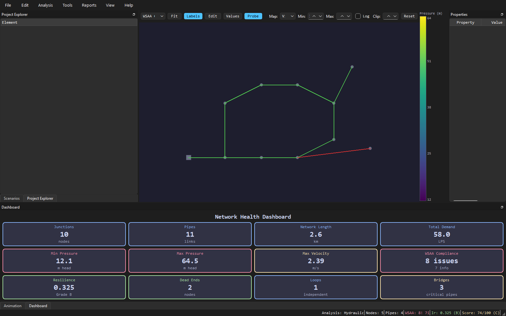
S41: Root cause analysis without results
Check: No crash, graceful return
PASS: rca returned: dict

S42: Close any error dialogs
Check: Dialogs dismissable
PASS: closed 0 remaining dialogs

S43: File > Open demo for edit mode
Check: Demo reloaded, J1 coords captured
PASS: loaded, J1 at (200.0, 0.0)
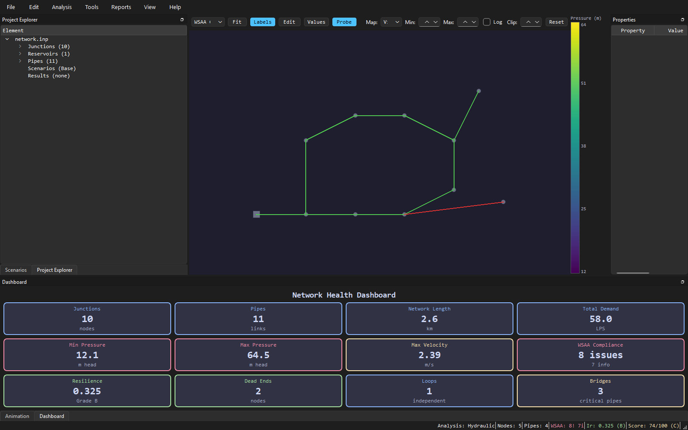
S44: F5 baseline analysis
Check: Analysis completed
PASS: baseline min p=12.1
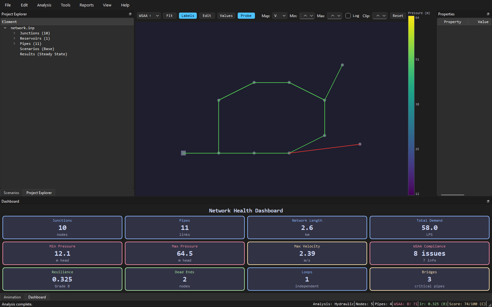
S45: Click Edit button
Check: edit_btn is checked
PASS: edit_btn=True

S46: Move J1 by +50, +50
Check: J1 coordinates updated
PASS: J1 moved to (250.0, 50.0) (expected (250.0, 50.0))
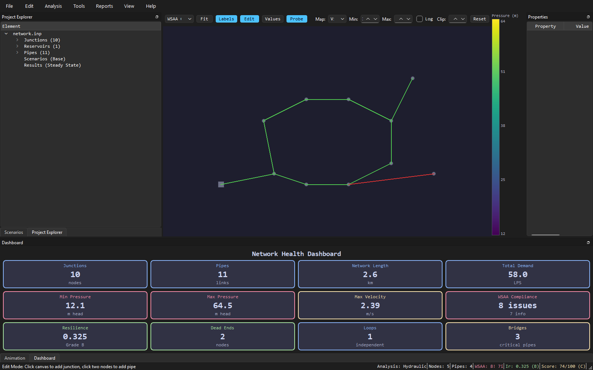
S47: Verify canvas rendered moved J1
Check: canvas._node_positions['J1'] changed
PASS: canvas has J1 at (250.0, 50.0), orig was (200.0, 0.0)

S48: Undo move (restore J1)
Check: J1 coordinates restored
PASS: J1 restored to (200.0, 0.0)